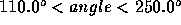
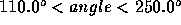
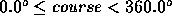

| Running Lights Visibility Calculator |
Ships underway on the high seas at night are required to display navigation lights to identify their location and direction of movement to other ships. Most ships we required to display a set of four running lights: one at the stern (rear), one in the middle on the mast, and two at the bow (front).
In naval practice, the course of a ship is the direction the ship is
traveling as measured clockwise from true north. For
example, a ship that is traveling due east is on a 90  course; one traveling
on a 315
course; one traveling
on a 315  course is traveling due west-northwest. The relative bearing
from ship A to ship B is the measure of the angle that the course of ship A makes
with the vector drawn from A to B, where the initial side of that angle
is incident with the course vector and the
terminal side is incident with the vector from A to B.
Thee measurement is taken clockwise.
course is traveling due west-northwest. The relative bearing
from ship A to ship B is the measure of the angle that the course of ship A makes
with the vector drawn from A to B, where the initial side of that angle
is incident with the course vector and the
terminal side is incident with the vector from A to B.
Thee measurement is taken clockwise.
If we assume that the bow of a ship is pointing to 0.0  or 360.0
or 360.0  , then the
running lights have ranges as shown in the
figure. Here, the stern (rear) of the ship is at 180.0
, then the
running lights have ranges as shown in the
figure. Here, the stern (rear) of the ship is at 180.0  . The masthead light
shines all directions (0.0
. The masthead light
shines all directions (0.0  - 360.0
- 360.0  ). The
stern light shines strictly between 110.0
). The
stern light shines strictly between 110.0  and 250.0
and 250.0  (the angle at which
the stern light is beamed relative to the ship
satisfies the inequalities  ). The red running light
shines strictly between 245.0
(the angle at which
the stern light is beamed relative to the ship
satisfies the inequalities  ). The red running light
shines strictly between 245.0  and 2.5
and 2.5  ; the
green running light shines strictly between 357.5
; the
green running light shines strictly between 357.5  and 115.0
and 115.0  . (Note the
overlap in the visible sectors between the
red and green running lights and stern light.) In addition, the nominal
maximum light visibility range for all lights is
10 nautical miles (nm).
For this problem, we'll suppose that the ship is a segment from prow
(where red and green light are placed at the same place, but red light is a bit to the starboard and green light is a bit to the port) to stern (where
the stern light is). The mast and the masthead light are at the middle of the ship.
. (Note the
overlap in the visible sectors between the
red and green running lights and stern light.) In addition, the nominal
maximum light visibility range for all lights is
10 nautical miles (nm).
For this problem, we'll suppose that the ship is a segment from prow
(where red and green light are placed at the same place, but red light is a bit to the starboard and green light is a bit to the port) to stern (where
the stern light is). The mast and the masthead light are at the middle of the ship.
Write a computer program that will repeatedly read in sets of data describing the location, course and speed of your own ship and other ships in the vicinity. Based on this information, the program will first calculate the relative bearings from other ships to your ship and display the expected configurations of visible lights from left to right as viewed from your own ship. Ships separated more than 10 nm away will not be visible.
The program then recalculates the relative
bearings after a 3 minute time delay to determine which ships are on a
collision course with your own. If another
ship is initially visible and if at the end of the 3 minute delay the
relative bearing from that ship to your own remains
almost the same (within 2  ) while the distance between the ships decreases,
then the program must issue a collision
warning. Assume that there will be no collisions of any type
(ship-to-ship or ship-to-land) in the 3 minute time period.
) while the distance between the ships decreases,
then the program must issue a collision
warning. Assume that there will be no collisions of any type
(ship-to-ship or ship-to-land) in the 3 minute time period.
The input file consists of several data scenarios. Each scenario is as follows.
Scenario ID (string - may contain blanks)Number of other ships (integer)
Information on your own ship on two lines:
name of your ship (string - may contain blanks)
x-coordinate y-coordinate course speed (reals)
Other ship information on two lines per ship:
name of other ship (string - may contain blanks)
x-coordinate y-coordinate course speed (reals)
All coordinates are on a cartesian grid with unit measurement of 1 nautical mile. Courses are measured from true north, and each course satisfies  . Speeds are in knots (1 knot = 1 nm/hr). The end of input is indicated by end-of-file.
Output consists of a single table per data set. A table shows the ID for each other ship along with its initially calculated relative bearing to your own ship, distance from your own ship, and its light configurations (from left to right) visible from your ship. If the lights are collinear with you print them in alphabetical order. Collision warnings, if any, should appear at the bottom of the table. Each warning should include the name of the other ship and its distance from your own ship at the end of the 3 minute interval. (Do not display the relative bearings, distances, or running lights configurations for the end of that warning interval.)
The output should be presented as on the sample output. The first and fourth columns are aligned to the left. The second and the third columns are aligned to the right. All real output should be written rounded with two digits to the right of the decimal (ie, 0.005 should be printed as 0.01). All printed bearings should be in the range 0≤bearing<360. That means that 359.995 should be printed as 0.00 instead of 360.00. Use an accuracy of ε = 10-7. Print a line of 63 asterisks after each scenario.
Sample Test Data Set 1 4 Ownship 0.0 0.0 90.0 10.0 Windswept 10.0 10.0 135.0 8.0 Footloose -5.0 6.0 275.0 6.0 Crasher 1 0.0 9.0 135 14.14 Aquavit -2.0 -2.0 294.0 15.0 Sample Test Data Set 2 5 Ownship 0.0 0.0 90.0 1.0 Sturmtebergh 0.0 9.0 180.0 1.0 Aldimere 0.3140954 9.0 180.0 1.0 Borand 0.4278773 9.8 180.0 1.0 Cornelius 0.3140954 -9.0 0.0 1.0 Daeron 0.4278773 -9.8 0.0 1.0
Sample Output
Scenario: Sample Test Data Set 1 Boat ID Bearing Distance Lights (left to right) --------------------------------------------------------------- Windswept 90.00 14.14 Lights not visible Footloose 225.19 7.81 Masthead Stern Crasher 1 45.00 9.00 Masthead Green Aquavit 111.00 2.83 Stern Masthead Green ** Collision warning -->Crasher 1: Distance = 8.50 *************************************************************** Scenario: Sample Test Data Set 2 Boat ID Bearing Distance Lights (left to right) --------------------------------------------------------------- Sturmtebergh 0.00 9.00 Green Masthead Red Aldimere 2.00 9.01 Masthead Green Red Borand 2.50 9.81 Masthead Green Cornelius 358.00 9.01 Green Red Masthead Daeron 357.50 9.81 Red Masthead ** Collision warning -->Sturmtebergh: Distance = 8.95 ** Collision warning -->Aldimere: Distance = 8.95 ** Collision warning -->Borand: Distance = 9.76 ** Collision warning -->Cornelius: Distance = 8.95 ** Collision warning -->Daeron: Distance = 9.76 ***************************************************************